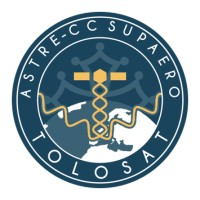
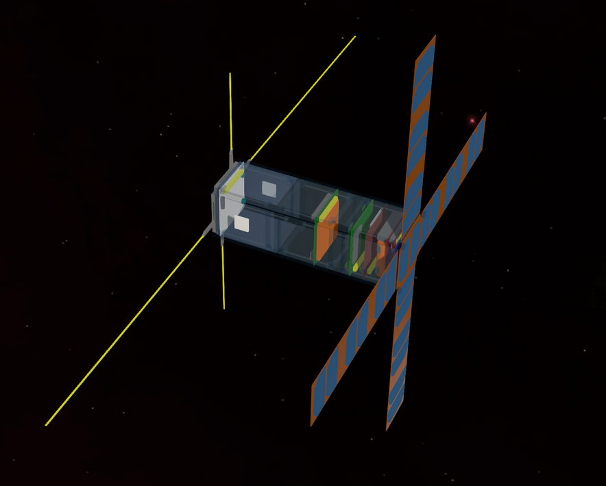

As a team member involved in the gravimetry experiment of the Tolosat student nano-satellite Project, I've contributed to advancing space research alongside more than 70 students from Toulouse representing 5 different schools: ISAE-SUPAERO via its Cubesat Club Supaero, and INSA, ENAC, ENSEEIHT, and Paul Sabatier University UT3 through the ASTRE association.
Organized into various subsystem teams, we are developing a 3U Cubesat aimed at carrying out a dual student mission.
  TOLOSAT GithubAs part of my role within the Women7 Club, I focus on promoting engineering to young girls through various communication strategies and the organization of engaging events.
Being a student in Toulouse currently, I have already taken steps towards being more proactive in this regard. For instance, given my current location, I've already started engaging with the Toulouse-based association 'Hall of Change' and have begun participating in their volunteer activities. I find it to be a commendable initiative that fosters community involvement and contributes positively.
During the Ecological and Social Transition Day organized at my school, ENSEEIHT, we had the opportunity to watch the film "Low Tech", a documentary produced by Adrien Bellay. This screening was a revelation for me. Through this documentary, I was able to grasp the true essence of "low tech" technologies and become aware of the significant impact that advanced technologies, or "high tech", have on our environment. This newfound insight has profoundly enriched my understanding of current ecological issues.
During the same day, I also had the chance to attend a roundtable discussion on the topic of impact entrepreneurship. The guests were the CEOs of the startups Hector the Collector and BeeGuard! It was incredibly enlightening and motivating. This experience showed me the potential of aligning business ventures with environmental and social values, truly an inspiring moment that has expanded my perspective on how businesses can operate for the greater good.